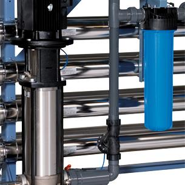

Установки обратного осмоса - деминерализованная вода высокого качества
Установки обратного осмоса (RO) используются для производства деминерализованной воды без использования химикатов. Кроме того, установки обратного осмоса удаляют пирогены и микроорганизмы, а также до 90% органических веществ.
1, 2, 3 …
Мы используем модульную конструкцию во всей нашей серии обратного осмоса, что позволяет очень легко адаптировать существующие установки для удовлетворения растущих потребностей в деминерализованной воде. Подход к стандартизации непрерывно совершенствовался с 1987 года, когда была поставлена наша первая установка обратного осмоса. На рисунке показана наша серия RO B1 производительностью от 0,4 до 2,4 м³/ч.
Промышленный дизайн
Сочетание технических ноу-хау и выбранных высококачественных компонентов обеспечивает соответствие устройств высочайшим промышленным стандартам.
1. Система сварных труб
Установка обратного осмоса имеет прочную сварную систему труб из нержавеющей стали, подходящую для высокого давления воды. Входные и выходные трубопроводы в стандартном исполнении изготавливаются из ПВХ.
2. Мембраны с низким энергопотреблением.
Мембраны выбраны таким образом, чтобы обеспечить нашим клиентам лучшее решение как с точки зрения эксплуатационных расходов, так и качества воды. EUROWATER постоянно следит за разработкой новых типов мембран, чтобы оптимизировать ассортимент нашей продукции.
3. Стальные корпуса
Напорные корпуса изготавливаются либо из нержавеющей стали, либо из стали, покрытой полиэтиленом. Это делает их очень индифферентными к перепадам давления, что обеспечивает долгий срок службы и защиту от протечек. В то же время напорные корпуса чрезвычайно устойчивы к коррозии.

4. Удобное управление
Каждый блок обратного осмоса контролируется контроллером PLC SE30. Управление специально разработано и запрограммировано нашими инженерами. Простой интерфейс позволяет легко управлять и контролировать работу устройства, включая настройку предварительной промывки, качественной промывки, пост промывки и предельных значений качества воды.
5. Эффективные насосы
Стандартные установки обратного осмоса оснащены энергоэффективными насосами высокого давления, в которых все части, контактирующие с жидкостью, а также верхняя и нижняя секции выполнены из нержавеющей стали.
Системы обратного осмоса
В нашем ассортименте есть ряд предварительно спроектированных стандартных установок с производительностью до 60 м3/ч. Все модули производятся на собственном заводе в Дании. Стандартные установки поставляются со стандартной документацией, что упрощает установку, эксплуатацию и обслуживание.
Выберите одноступенчатый RO, двуступенчатый RO или RO-PLUS.
Одноступенчатый RO
Одноступенчатый обратный осмос в предварительно разработанной стандартной конструкции для надежной работы при проводимости 15 µS/cm.
Двуступенчатый RO
Двуступенчатый RO обеспечивает более высокое качество пермеата с электропроводностью 5µS/cm. Двуступенчатый RO обеспечивает двойную защиту от микробов и бактерий в воде.
RO-PLUS
RO-PLUS рассчитан на восстановление воды до 90% и в то же время снижает потребление энергии. RO-PLUS доступен как в виде новых блоков, так и в качестве обновления для существующих блоков обратного осмоса.
Адаптирован под ваше приложение
Мы предлагаем множество возможностей индивидуальных решений. Практически все параметры и компоненты можно варьировать и комбинировать.
EUROWATER имеет большой опыт в производстве трубопроводных систем из других материалов, кроме ПВХ, таких как:
- PP
- PE
- PVDF
- Нержавеющая сталь
Эффективные мембраны обратного осмоса
Мы предлагаем вам широкий выбор мембранных элементов обратного осмоса. Все это тщательно подобрано, чтобы гарантировать вам мембранный элемент высокого качества, подходящий для установок обратного осмоса EUROWATER.
Мы предлагаем несколько типов мембран, например EWLE-4040, которые представляют собой низкоэнергетические мембраны для работы при низком давлении, или EWHR-4040 с высокой эффективностью удерживания для обеспечения превосходного качества воды.
Все наши мембранные элементы обратного осмоса есть в наличии с короткими сроками доставки. Свяжитесь с вашим местным офисом продаж и обслуживания для получения дополнительной информации.
Система управления, предназначенная для установок обратного осмоса
Блок управления SE40 от EUROWATER со встроенной регистрацией данных регистрирует и контролирует состояние вашей установки обратного осмоса. Все данные собираются в режиме реального времени и легко доступны с помощью графиков и графиков.
Подходит ли Ваша вода для обратного осмоса?
Коллоидный индекс (SDI) — это измерение потенциала загрязнения взвешенными твердыми частицами. SDI используется, чтобы определить, подходит ли вода для обратного осмоса.
Надежные установки обратного осмоса
Бесперебойная работа начинается с правильной очистки воды. В этой брошюре мы собрали все, что Вам нужно знать о надежных установках обратного осмоса.
Все на одной раме
Готовая установка для очистки воды на раме для производства деминерализованной воды - отличное решение, если Ваша водоподготовка состоит из нескольких этапов очистки.
На фотографии показано решение на раме для одной из крупнейших больниц Дании. Система включает умягчение, обратный осмос и УФ-дезинфекцию.
Аренда установки обратного осмоса
Вам нужна качественная деминерализованная вода на короткое время?
Аренда мобильной водоочистной установки производительностью от 2 до 20 м3/час от EUROWATER.
Получите оптимальное решение
Выбор установки зависит от области применения, качества и расхода воды. Мы к Вашим услугам найти оптимальное решение на основе нашего ноу-хау. Заполните форму, и мы свяжемся с Вами.